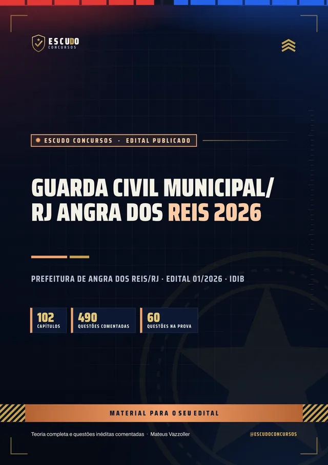
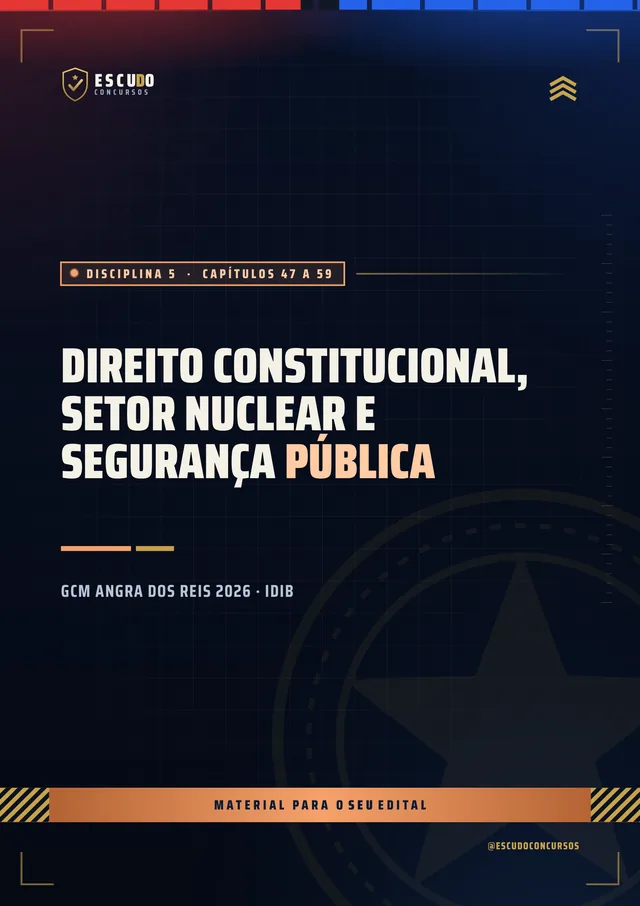
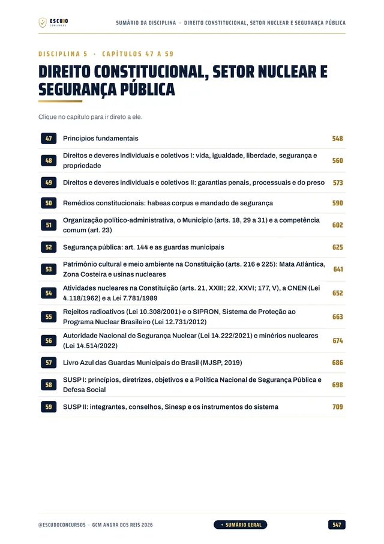
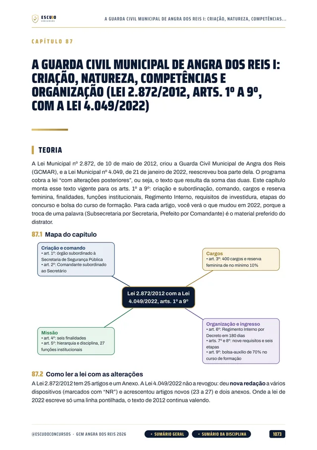
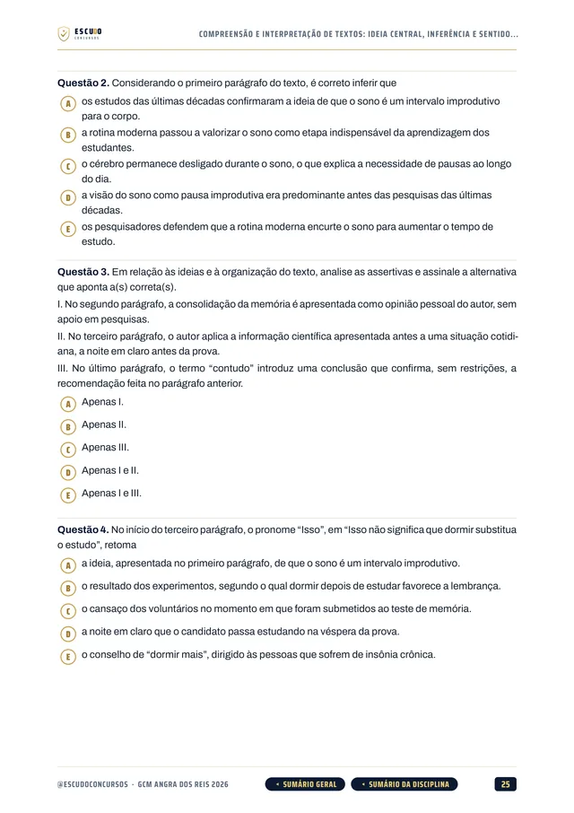
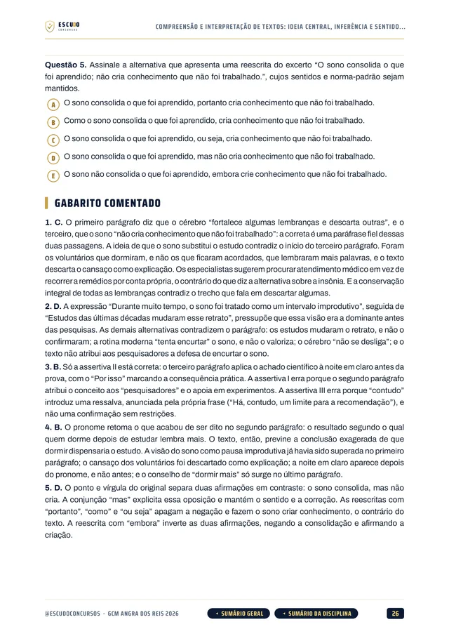
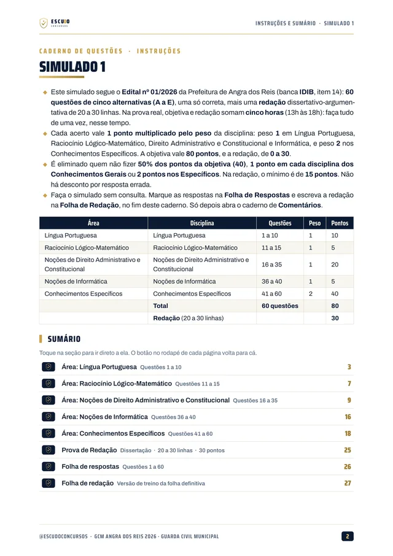
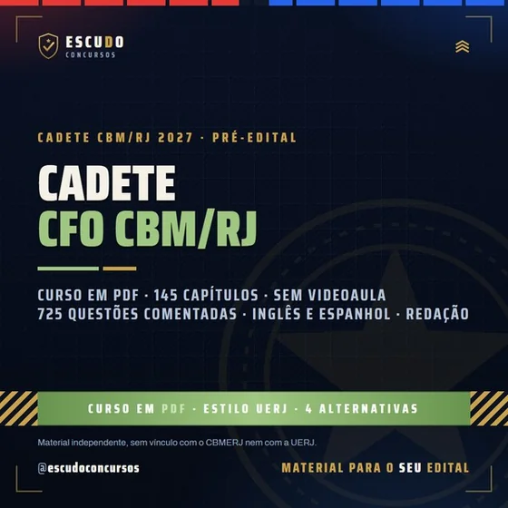

Simulado 1
No meio do caminho
Para medir onde você está e ajustar o estudo enquanto ainda dá tempo.
30 dias após a compra
Material independente, sem vínculo com a Prefeitura de Angra dos Reis nem com o IDIB.


490questões
comentadas
ConcursoGCM Angra dos Reis2026 · Guarda Civil
Briefing
São 200 vagas e 250 de cadastro reserva. O seu material cobre o edital inteiro, inclusive a lei da guarda de Angra, o regime jurídico dos servidores e o setor nuclear? Curso feito a partir do Edital nº 01/2026, de 18 de novembro de 2026, item por item, com a lei vigente na data do edital, questões de 5 alternativas, gabarito comentado e redação.
De acordo com o Edital nº 01/2026, de 18/11/2026 · IDIB
de R$ 47 por 21% OFF
R$37
com o cupom ANGRA37 até 21/12/2026. Pelo botão, o cupom já vai preenchido.
R$47
Curso completo, com acesso imediato.
Resposta rápida
A prova objetiva e a redação do concurso da Guarda Civil Municipal de Angra dos Reis são em 24/01/2027, à tarde, aplicadas pelo IDIB (Edital nº 01/2026, de 18 de novembro de 2026). As inscrições vão até 21/12/2026.
São 200 vagas e 250 de cadastro de reserva, com vencimento de R$ 3.872,27 mais 30% de adicional de periculosidade, nível médio com CNH categoria AB e jornada de 40 horas semanais no edital.
A prova objetiva tem 60 questões de múltipla escolha com cinco alternativas, de A a E, e vale 80 pontos, com peso 2 nos Conhecimentos Específicos. É preciso fazer 50% dos pontos, 1 ponto em cada disciplina dos Conhecimentos Gerais e 2 nos Específicos. A redação vale de 0 a 30 pontos. O curso em PDF da ESCUDO segue o edital item por item, com 102 capítulos, 490 questões comentadas, redação e 2 simulados de 60 questões, e tem 7 dias de garantia pela Hotmart.
Terreno
O concurso
O concurso da Guarda Civil Municipal de Angra dos Reis, no Rio de Janeiro, abriu 200 vagas e 250 de cadastro de reserva. O vencimento é de R$ 3.872,27, mais 30% de adicional de periculosidade, a exigência é nível médio completo e CNH categoria AB, e a jornada é de 40 horas semanais no edital. As inscrições vão até 21/12/2026, com taxa de R$ 133,00, e a prova do IDIB é em 24 de janeiro de 2027, à tarde, com 60 questões de 5 alternativas e uma redação.
Os Conhecimentos Específicos (20 questões, peso 2) valem 40 dos 80 pontos da objetiva, e Direito Administrativo e Constitucional, 20. É preciso fazer 50% dos pontos, 1 ponto em cada disciplina dos Conhecimentos Gerais e 2 nos Específicos. A redação, de 0 a 30, tem módulo técnico e só é corrigida para os 1.000 mais bem classificados. A lei da guarda e o regime jurídico dos servidores de Angra dos Reis têm capítulos próprios, assim como o setor nuclear.
Cada questão de Conhecimentos Específicos vale 2 pontos: as 20 questões somam 40 dos 80 pontos da objetiva.
| Disciplina | Questões | Capítulos |
|---|---|---|
| Língua Portuguesa (peso 1) | 10 | 19 |
| Raciocínio Lógico-Matemático (peso 1) | 5 | 8 |
| Noções de Direito Administrativo e Constitucional (peso 1): inclui o RJU de Angra dos Reis, o setor nuclear, o Livro Azul e o SUSP | 20 | 22 |
| Noções de Informática (peso 1) | 5 | 9 |
| Conhecimentos Específicos (peso 2): Direitos Humanos, Direito Penal e Processual Penal e Legislação Extravagante, com a lei da guarda de Angra | 20 | 40 |
| Mais o capítulo 001, sobre como é a prova e como usar o curso, e 3 capítulos de redação. | 60 | 102 |
Protocolo
O formato
Você estuda lendo, no seu ritmo, pela área de membros da Hotmart ou com os arquivos baixados. O curso foi feito a partir do Edital nº 01/2026, de 5 de novembro de 2026, item por item, na ordem do conteúdo programático, com a legislação conferida na redação vigente na data do edital, como o Anexo II manda.
Reconhecimento
Páginas reais do PDF
Toque numa página para ver em tamanho maior.





100% em PDF · Garantia de 7 dias · Pagamento pela Hotmart
Equipamento
O que você recebe
Curso em PDF organizado em 17 módulos pelas disciplinas do edital, com 1.293 páginas no padrão visual ESCUDO, para ler no computador, no tablet, no celular ou no app da Hotmart. Não há videoaulas.
102 capítulos do edital, de Língua Portuguesa aos Conhecimentos Específicos da Guarda Civil Municipal: Raciocínio Lógico-Matemático, Informática, Direito Administrativo e Constitucional, Direitos Humanos, Penal e Processo Penal e a legislação extravagante.
490 questões inéditas com 5 alternativas, de (A) a (E), todas com gabarito comentado: por que a correta está correta e onde erra cada uma das outras quatro.
A lei da guarda e o RJU de Angra dos Reis em 3 capítulos: a Lei Municipal 2.872/2012, com as alterações da Lei 4.049/2022, e a Lei 412/1995, com o texto dos artigos cobrados e as divergências entre o edital e a lei explicadas.
Setor nuclear, Livro Azul e SUSP em 6 capítulos: CNEN, rejeitos radioativos, SIPRON, ANSN e minérios nucleares, o Livro Azul das Guardas Municipais e a Lei 13.675, que o programa do edital cobra.
Redação em 3 capítulos: o texto dissertativo-argumentativo de 20 a 30 linhas, os três módulos de correção, o repertório de temas de guarda e propostas comentadas com redações-modelo.
Teoria com recursos para memorizar: mapa de cada capítulo, esquemas, pegadinhas, quadros de “não confunda”, revisão relâmpago e teste de memória. Navegação clicável: do sumário você vai direto à disciplina e ao capítulo, e volta pelos botões do rodapé.
2 simulados inéditos de 60 questões de 5 alternativas, no formato e com os pesos da prova do IDIB, cada um com proposta de redação e caderno de comentários. O Simulado 1 é liberado 30 dias após a compra e o Simulado 2, 60 dias após a compra.

Plano de ação
Área de membros
| Módulo | Conteúdo | Liberação |
|---|---|---|
| M0 Comece aqui | Apresentação + capítulo 001 (como é a prova e como usar o curso). Bônus: PDF completo para baixar e imprimir | Na compra; o PDF completo no 8º dia |
| M1 Língua Portuguesa I | Capítulos 002 a 010 | Na compra |
| M2 Língua Portuguesa II | Capítulos 011 a 020 | Na compra |
| M3 Raciocínio Lógico-Matemático | Capítulos 021 a 028 | Na compra |
| M4 Noções de Informática | Capítulos 029 a 037 | Na compra |
| M5 Direito Administrativo | Capítulos 038 a 046, com o RJU de Angra dos Reis | Na compra |
| M6 Direito Constitucional | Capítulos 047 a 053 | Na compra |
| M7 Setor nuclear, Livro Azul e SUSP | Capítulos 054 a 059 | Na compra |
| M8 Direitos Humanos I | Capítulos 060 a 065 | Na compra |
| M9 Direitos Humanos II | Capítulos 066 a 072 | Na compra |
| M10 Direito Penal | Capítulos 073 a 079 | Na compra |
| M11 Processo Penal | Capítulos 080 a 084 | Na compra |
| M12 Legislação Extravagante I | Capítulos 085 a 091, com a Lei 2.872/2012 | Na compra |
| M13 Legislação Extravagante II | Capítulos 092 a 099 | Na compra |
| M14 Redação | Capítulos 100 a 102 | Na compra |
| M15 Simulado 1 | 60 questões, proposta de redação e caderno de comentários | 30 dias após a compra |
| M16 Simulado 2 | 60 questões, proposta de redação e caderno de comentários | 60 dias após a compra |
Treinamento
Treino no formato da prova
Cada simulado tem 60 questões de 5 alternativas, na divisão e com os pesos da prova do IDIB (Português 10, Raciocínio Lógico-Matemático 5, Direito Administrativo e Constitucional 20, Informática 5 e Conhecimentos Específicos 20), mais uma proposta de redação, com caderno de comentários.
Simulado 1
Para medir onde você está e ajustar o estudo enquanto ainda dá tempo.
30 dias após a compra
Simulado 2
Cobre o programa inteiro de novo, para o seu teste final.
60 dias após a compra
Perfil
Para quem é
Para quem vai prestar a Guarda Civil Municipal de Angra dos Reis e quer estudar o edital inteiro, com a lei da guarda, o regime jurídico dos servidores, o setor nuclear e a redação, sem perder tempo com assunto que não cai.
Proteção
Você tem 7 dias de garantia pela Hotmart. Se não for o que você esperava, pede o reembolso pela própria Hotmart, dentro do prazo.
Cronograma
Sem surpresa na área de membros
Na compra: todas as disciplinas em PDF, uma por módulo, com a teoria e as questões comentadas. É o curso inteiro, para começar a estudar no mesmo dia.
8 dias após a compra: o PDF completo para imprimir. É o mesmo conteúdo dos módulos num arquivo só, liberado depois da garantia de 7 dias.
Simulado 1: 30 dias após a compra, para medir onde você está no meio da preparação.
Simulado 2: 60 dias após a compra, a tempo do último teste antes da prova de 24/01/2027.
O PDF completo e os simulados aparecem bloqueados na área de membros até a data de cada um: não é conteúdo faltando, é a liberação programada.
Instrução
Dúvidas
Não. É um curso 100% em PDF: teoria, questões comentadas e simulados para ler e resolver.
O acesso é imediato depois da confirmação do pagamento, pela área de membros da Hotmart (web ou app). O PDF completo para baixar e imprimir é liberado no 8º dia.
O Simulado 1 é liberado 30 dias após a compra e o Simulado 2, 60 dias após a compra.
Sim. É feito a partir do Edital nº 01/2026, de 18 de novembro de 2026, com o Anexo II item por item e a legislação na redação vigente na data do edital. As inscrições vão até 21/12/2026 e a prova do IDIB é em 24/01/2027.
Sim, em 3 capítulos: a Lei Municipal 2.872/2012, que criou a Guarda Civil Municipal, com as alterações da Lei 4.049/2022, e o Regime Jurídico Único dos servidores (Lei 412/1995), com o texto dos artigos cobrados.
Sim, em 6 capítulos: a CNEN e as Leis 4.118/1962 e 7.781/1989, os rejeitos radioativos, o SIPRON, a ANSN e os minérios nucleares, o Livro Azul das Guardas Municipais e o SUSP. Também estão o Estatuto Geral das Guardas Municipais (Lei 13.022/2014), o uso da força, o ECA e a Maria da Penha.
Não. A prova do IDIB tem 60 questões de múltipla escolha com cinco alternativas, de (A) a (E), e uma só correta. Cada acerto vale 1 ponto multiplicado pelo peso da disciplina, e é preciso fazer 40 dos 80 pontos, com o mínimo por área do edital.
Não. As 490 questões de treino e as dos simulados são inéditas, escritas a partir do programa.
Você tem 7 dias de garantia pela Hotmart. Se não for o que você esperava, pede o reembolso.
Missão
GCM Angra dos Reis 2026
de R$ 47 por 21% OFF
R$37
com o cupom ANGRA37 até 21/12/2026.
R$47
Curso completo, com acesso imediato.
Material para o SEU edital. ESCUDO Concursos.
Continue estudando

CBM/RJ 2027 · Pré-edital · CFOCadete do Corpo de Bombeiros Militar do Rio de Janeiro (CFO) CFO PM/RJ 2027 · Pré-edital · CesgranrioOficial da Polícia Militar do Rio de Janeiro (CFO)
CFO PM/RJ 2027 · Pré-edital · CesgranrioOficial da Polícia Militar do Rio de Janeiro (CFO) PM/RJ 2026 · Pré-editalSoldado da Polícia Militar do Rio de Janeiro
PM/RJ 2026 · Pré-editalSoldado da Polícia Militar do Rio de JaneiroGuia do concurso: edital, vagas e o que cai · Ver todos: Guarda Municipal · Concursos no Rio de Janeiro